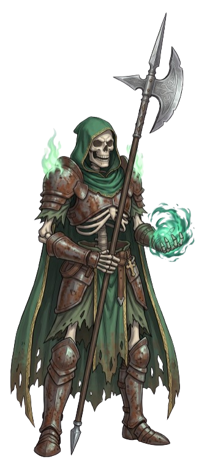

Paladins who swear the Oath of Chaos act as active agents of wild probability, living catalysts of change, and untamable liberators. They view rigid systems, unyielding dogmas, and enforced order as stagnation, striving instead to force evolution through unpredictable action and absolute freedom.
You gain oath spells at the paladin levels listed.
| Paladin Level | Spells |
|---|---|
| 3rd | chaos bolt, expeditious retreat |
| 5th | misty step, shatter |
| 9th | hypnotic pattern, sleet storm |
| 13th | dimension door, polymorph |
| 17th | passwall, animate objects |
When you take this oath at 3rd level, you gain the following two Channel Divinity options.
Unshackle Loyalty. As an action, you shatter the rigid allegiance of a creature you can see within 30 feet of you whose Challenge Rating is equal to or less than half your Paladin level (rounded down). The target must succeed on a Wisdom saving throw against your spell save DC. On a failed save, the creature treats you and your companions as allies for 1 hour. If you or your companions deal damage to the target, it immediately makes a new Wisdom saving throw to end the effect. If its former allies attack it during this time, it immediately turns hostile toward them. When the duration ends, all allegiance bonds shatter completely; the creature gains total independence and freely decides its own actions, friends, and foes.
Chaotic Swap. As an action, you force two creatures (Medium or Small) within 30 feet of you to swap places. You can choose yourself as one of these targets. Unwilling targets must succeed on a Charisma saving throw against your spell save DC to resist the swap.
Starting at 3rd level, whenever you use Divine Smite and roll a 1 on any of your Divine Smite damage dice, the chaotic magic overflows. You immediately roll a d10 on the Table of Volatile Entropy.
At 3rd level, you manipulate wild probability to gain advantage on one attack roll, ability check, or saving throw. Once you use this feature, you cannot use it again until you finish a short or long rest.
Before you regain the use of this feature, you recharge it immediately whenever one of the following occurs:

| d10 | Effect |
|---|---|
| 1 | Entropic Backlash. Violent magic tears outward. You and the target both take Necrotic damage equal to your Charisma modifier + half the Smite damage dealt. |
| 2 | Gravity Collapse. Space warps violently around the strike. All creatures within 10 feet of the target (including you) must succeed on a Strength saving throw or be pulled into an unoccupied space adjacent to the target and knocked prone. |
| 3 | Mind-Fraying Flash. A blinding flash of eldritch light erupts. You and the target must succeed on a Constitution saving throw or be blinded until the end of your next turn. |
| 4 | Bleeding Rift. The strike tears a temporary fissure to the Astral Plane. The target is heavily obscured by dimensional fog until the start of your next turn, but any creature that strikes it before then deals an extra 1d6 Force damage. |
| 5 | Vampiric Rupture. Black lightning arcs across the wound. The target takes maximum damage on your Smite dice, and you regain hit points equal to half the Smite damage dealt. |
| 6 | Anarchic Surge. The strike erupts in pure raw force. The target takes double Smite damage and is pushed 20 feet away. Additionally, you instantly regain your reaction if you have already used it this round. |
| 7 | Improbability Shift. Reality briefly stumbles into absurdity. The target's weapon or spellcasting focus temporarily transforms into a potted plant or small brass towel until the end of its next turn, preventing weapon attacks or spells with material components. |
| 8 | Perspective Shock. The strike forces an overwhelming wave of objective cosmic perspective. The target must succeed on a Wisdom saving throw against your spell save DC or be frightened of you and incapacitated by existential dread until the start of your next turn. |
| 9 | Babel Scramble. Pure chaotic noise floods local telepathic channels. All hostile creatures within 15 feet take 1d6 Psychic damage and cannot speak, cast spells with verbal components, or communicate until the end of their next turn. |
| 10 | The Ultimate Answer. Probability converges on absolute certainty. You deal an extra 4 Force damage, and the next attack roll, saving throw, or ability check made by you or an ally within 30 feet within 1 minute automatically succeeds (or counts as a natural 20). |
Beginning at 7th level, order cannot exist anywhere near you. You project a 10-foot aura of wild freedom. You and friendly creatures within your aura cannot be restrained or grappled, and moving through difficult terrain costs no extra movement.
At 18th level, the range of this aura increases to 30 feet.
Starting at 15th level, whenever an effect, spell, or creature attempts to reduce your movement speed, knock you prone, or move you against your will, you can use your reaction to completely negate it and instantly teleport up to 20 feet in any direction.
At 20th level, as an action, you transform into a living force of total liberation for 1 minute, gaining the following benefits:
Once you use this feature, you can’t use it again until you finish a long rest.